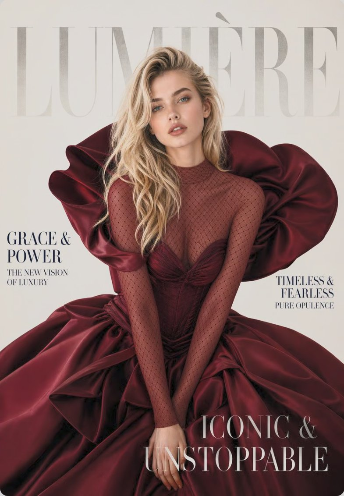

A designer-grade studio that turns a single selfie into editorial portraits. 135 hand-curated styles across four worlds — Locations, Fashion, Retro, Muse. Anonymous by default. No sign-up, no Apple ID, photos never stored.
02 / The problem
“Every other AI photo app turns you into a stranger. Same prompt, different person.
That was the wall we hit when we tested the category. The output was technically impressive — and emotionally meaningless. You don't want to see a beautiful person who isn't you. You want to see yourself, art-directed.
03 / The decision
Taste over volume.
Most AI photo apps offer infinite styles — all of them generic, none of them yours. We chose a different number: 135. Each style hand-selected across four worlds. If a style doesn't look like a magazine cover, it doesn't ship.
135
Curated styles
04
Visual worlds
00
Sign-ups required
04 / What it does
01
135 curated styles
Hand-selected editorial looks across Locations, Fashion, Retro and Muse worlds. Curated, not generated.
02
Identity lock
Your face preserved across every style. STDIO doesn't morph you into a stranger — same face, new world.
03
Stamped postcards
Type any city. STDIO stamps you into it with a postal-grade canvas — your own travel diary, generated.
04
Magazine-grade output
Editorial portraits, runway covers, lookbook frames that look like a publication art-directed them. Not a filter — an art direction.
05
Six app icons
Default, Chrome, Cyber, Monolith, Striped, Wireframe. Match the icon to your home-screen mood.
06
Sound & haptics
Tactile micro-interactions and five hand-tuned UI sounds. Every tap is considered.
07
Privacy by default
Anonymous device ID, no sign-up, photos never stored. GDPR / CCPA / UK GDPR clean. Apple "Data Not Linked to You" badge.
08
No watermark, no noise
Pro removes everything. Designer-grade output, ready for export, social, or print.
05 / In production
Four worlds, one engine. Output below was made by STDIO itself, using the same pipeline the app ships.
INPUT / 903 × 1132STYLE / LOC-01
Locations — postcards from any city. Type a place, get yourself stamped into it.

INPUT / 785 × 1132STYLE / FAS-02
Fashion — runway covers. Magazine art direction, applied to one selfie.